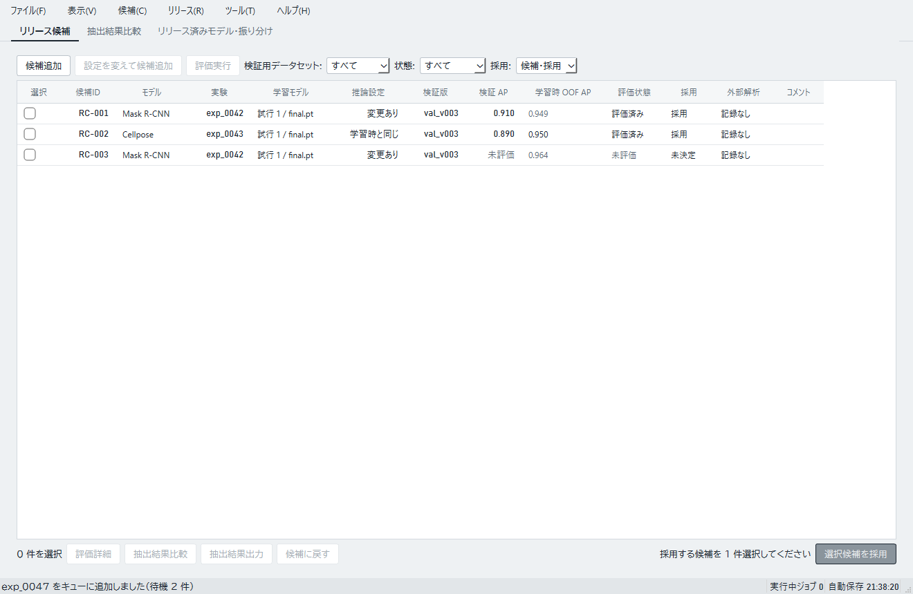
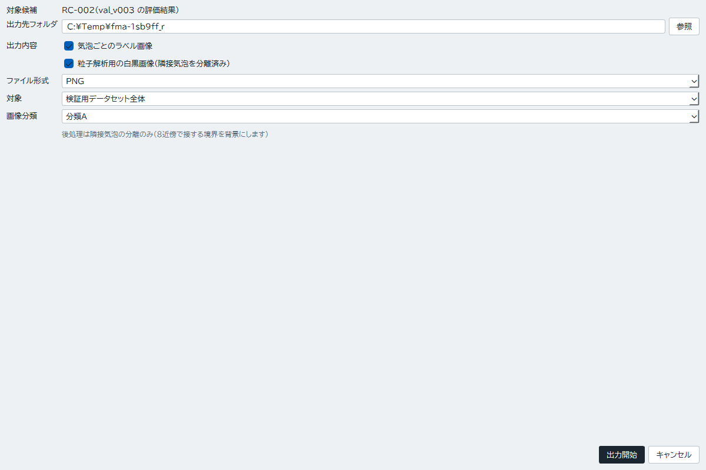
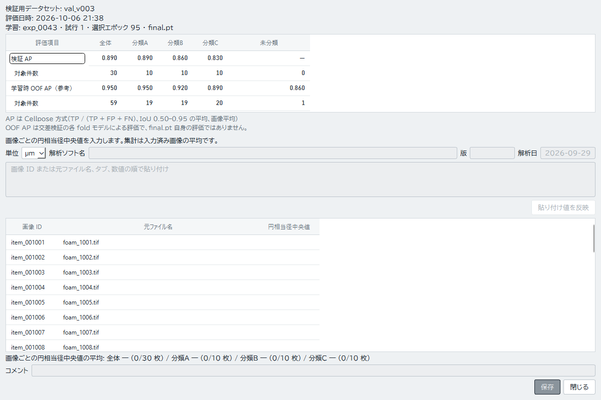
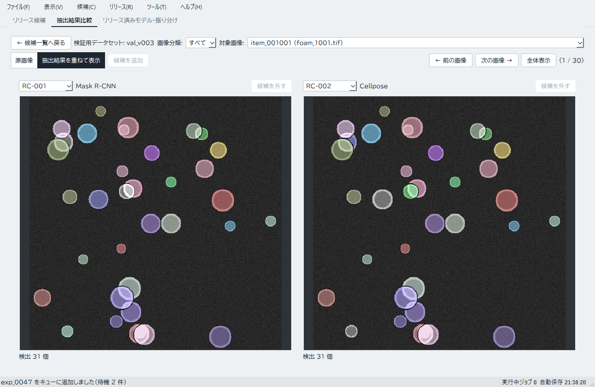
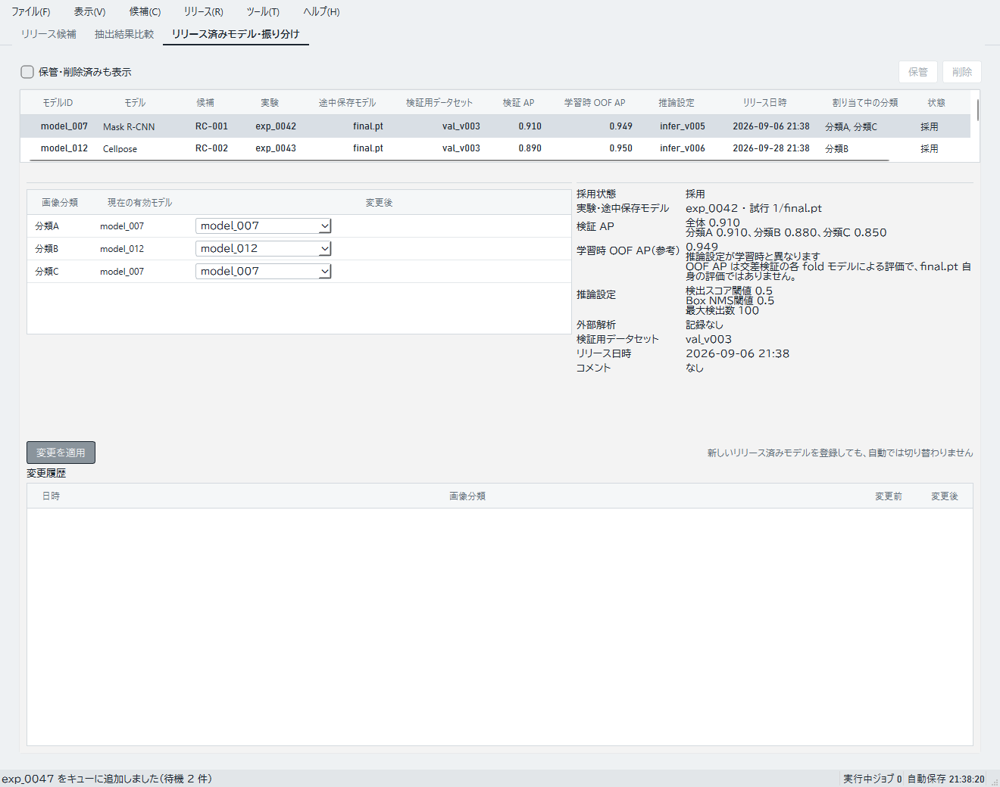

実接続では候補、評価結果、リリース、分類への振り分けを保存します。評価を比べるときは同じ検証用データセット版の結果を使います。
候補を登録して評価する
- 「リリース候補」タブで「候補追加」を選び、完了した実験を指定します。
- 推論設定を選びます。必要なら設定を変えて候補を追加します。
- 評価する候補にチェックを付けて「評価実行」を選びます。
- 評価が完了したら、評価詳細で対象版や結果を確認します。
APは1に近いほど正解ラベルとの一致度が高い値です。異なる検証版で得た値は直接比べられません。「学習時 OOF AP」は学習データ内の交差検証による参考値で、別の検証版を使う候補評価と区別します。


外部解析用に出力する
- 「リリース候補」タブで評価済み候補1件にチェックを付け、「抽出結果出力」を押します。
- ダイアログの「出力先フォルダ」で「参照」を押し、保存先を選びます。「出力内容」とファイル形式を選び、「対象」で検証用データセット全体か画像分類で絞り込むかを指定します。
- 「出力開始」を押し、保存された画像を外部解析ソフトで解析します。


リリース採用に使った評価の外部解析結果は閲覧専用です。採用済み候補でも、同じ検証用データセット版で再評価を完了すれば、その新しい評価に外部解析結果を保存できます。採用時の評価とリリース記録は書き換わりません。
- 同じ候補1件の「評価詳細」を開き、「単位」「解析ソフト名」「版」「解析日」を入力します。
- 表の「円相当径中央値」欄に画像ごとの値を入力します。複数行を貼り付ける場合は、画像 ID または元ファイル名、タブ、数値の順に並べ、「貼り付け値を反映」を押します。
- 対象画像と値を確認し、「保存」を押します。


抽出結果を比較する
「リリース候補」タブで同じ検証用データセット版を使って評価済みの候補にチェックを付けます。2〜4件を選び、一覧下部の「抽出結果比較」を押すと比較画面が開きます。評価版が異なる候補は同じ比較に含められません。


候補を採用して振り分ける
評価済み候補の操作から「選択候補を採用」を選び、対象の評価結果とコメントを確認して登録します。
「リリース済みモデル・振り分け」タブで分類ごとのモデルを選び、「変更を適用」を押します。ホームと本番推論画面では、この振り分けが各分類に使うモデルとして反映されます。


リリース済みモデルの「削除」は公開モデルの重みを削除します。リリース記録と評価履歴は残りますが、元に戻せません。モデルを分類に割り当てたままでは削除できないため、先に振り分けを解除します。この操作は実験一覧の「成果物を整理」とは別です。「成果物を整理」では実験記録を残しながら学習中のファイルを整理し、リリースに使われている重みは削除対象になりません。